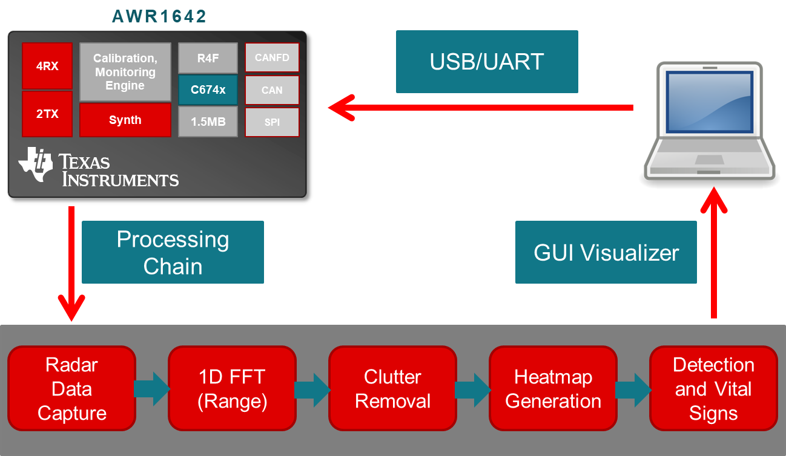
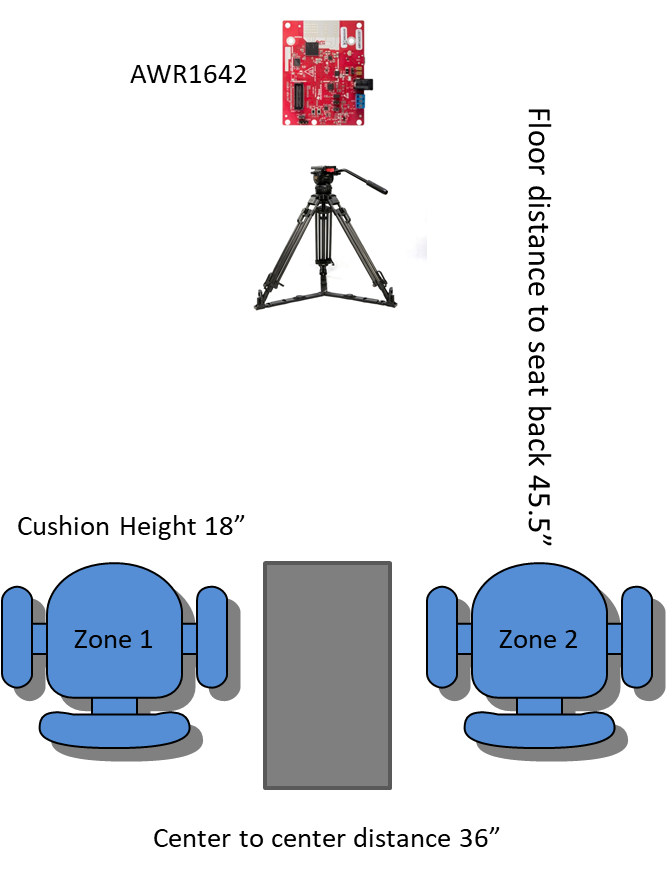
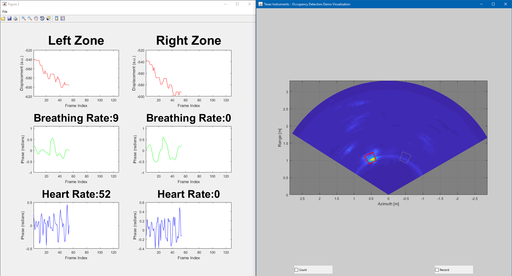
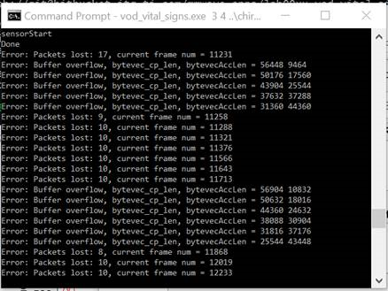
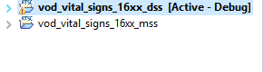
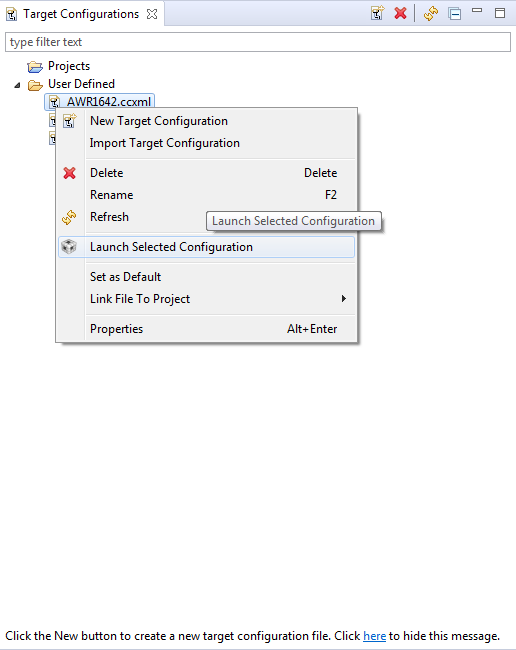
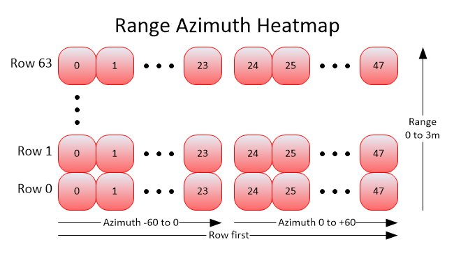
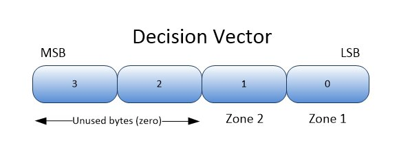

Overview
===========
*This lab combines two labs, Vehicle Occupant Detection and Driver Vital Signs, into a single application and GUI.
You can find these two individual labs on TI's Resource Explorer in the mmWave Sensors Automotive Toolbox.
This release supports two zones for both occupancy detection and vital signs.*
This lab demonstrates the use of TI mmWave sensors to detect people in pre-defined zones of coverage and measure their vital signs such as heart rate and breathing rate.
Using the AWR1642, algorithms run onboard the single-chip device to create an Range-Azimuth heatmap, then extract features, detections, and vital signs information from the heatmap.
Chirp configurations are selected to detect slight movements (like breathing) with a high degree of accuracy.
The Occupancy and Vital Signs Detection Demo generates an angular heatmap that is displayed using a MATLAB GUI.
Two zones of interest are defined, and algorithms examine the heatmap to provide frame by frame occupancy decisions.
Each zone of interest is identified as occupied or not along with a breathing and heart rate if the zone is occupied by a person.

For the purposes of this lab, this release has been developed to support one pair of zones for both occupancy detection and vital signs.
Quickstart
===========
The quickstart contains:
* Precompiled binaries for flashing the device using Uniflash
* Visualizer as .exe
1. Hardware and Software Requirements
-----------
### Hardware
Item | Details
--------------------------|-----------------
Device | [AWR1642 EVM](http://www.ti.com/tool/AWR1642BOOST)
Mounting Hardware | The EVM needs to be mounted at chest height. An [adjustable clamp style smartphone adapter mount for tripods](https://www.amazon.com/Vastar-Universal-Smartphone-Horizontal-Adjustable/dp/B01L3B5PBI/) and a [60-75" tripod](https://www.amazon.com/Neewer-Portable-centimeters-Camcorder-kilograms/dp/B01N6JCW8F/) can be used to clamp and elevate the EVM. This is only an example solution for mounting; other methods can be used so far as setup specifications are met.
Computer | PC with Windows 7 or 10. If a laptop is used, please use the 'High Performance' power plan in Windows. 2.4Ghz processor, 8GB RAM recommended.
Micro USB Cable | Due to the high mounting height of the EVM, an 8ft+ cable or USB extension cable is recommended.
Power Supply | 5V, 3A with 2.1-mm barrel jack (center positive). The power supply can be wall adapter style or a battery pack with a USB to barrel jack cable.
Pulse Oximeter | Used to compare the output from the GUI. This [example device](https://www.amazon.com/AccuMed-Oximeter-Monitor-Carrying-Lanyard/dp/B00Y1KMDLY/ref=sr_1_4?crid=3QY140YKTDDXC&keywords=pulse+oximeter&qid=1565618929&s=sporting-goods&sprefix=pulse+ox%2Csporting%2C149&sr=1-4) attaches to the index finger.
Tape Measure |
### Software
Tool | Version | Required For |Details
----------------------------|---------------------------|-------------------------|-------------------------------------------------------------------------------------------------------------------
mmWave Automotive Toolbox | 2.5.0 or later | ES2.0 silicon | Contains all files (quickstart, visualizer and firmware source files) related to mmWave Occupancy Detection Lab
MATLAB Runtime | 2017a (9.2) | GUI Visualizer | To run the quickstart visualizer the [runtime](https://www.mathworks.com/products/compiler/matlab-runtime.html) is sufficient.
TI mmWave SDK | 3.2.0.4+ | Firmware Source Code | The latest [TI mmWave SDK](http://software-dl.ti.com/ra-processors/esd/MMWAVE-SDK/latest/index_FDS.html) and all the related tools are required to be installed as specified in the mmWave SDK release notes
TI Emulators package | 7.0.188.0 or later | - | Upgrade to the latest using CCS update process (see SDK user guide for more details)
### Reference Material
Item | Details
-------------------------------|---------------------------------
Vehicle Occupant Detection Lab | TIREX Release for [Vehicle Occupant Detection Lab](http://dev.ti.com/tirex/explore/node?node=ABRk8DO4mlEa.5Y1k4vF5w__AocYeEd__LATEST)
Driver Vital Signs Lab | TIREX Release for [Driver Vital Signs Lab](http://dev.ti.com/tirex/explore/node?node=AMMqEZFBhFXHZ47xv7VJ8Q__AocYeEd__LATEST)
VOD Design Document | TI Design for [Vehicle Occupant Detection](http://www.ti.com/lit/ug/tidue95/tidue95.pdf)
2. Physical Setup
-----------
For best results, the EVM should be positioned as shown below, with the sensor placed at chest height when seated.
This is because the zones and coefficients in the chirp configuration are tuned to the scene that is being monitored.

Chirp Configuration | Test Scene | Description
--------------------------------|-------------------------------------------------------------
vod_vital_signs_10fps.cfg | Lab | Configuration that runs at 10 frames per second
3. Flash the Device
-----------
* XDS Emulation software is required for flashing if CCS (Code Composer Studio) is not installed (CCS
installs it automatically). XDS Emulation software can be found [here](http://processors.wiki.ti.com/index.php/XDS_Emulation_Software_Package).
* Power on the EVM using a 5V/2.5A power supply.
* Flash the following image using **Uniflash**
Image | Location
--------------------------|------------
Meta Images | `C:<install_dir>\lab00xx_occupancy_vitalsigns_detection\prebuilt_binaries\vod_vital_signs_16xx.bin`
[[+d Expand for help using Uniflash
* Connect the EVM to your PC and check the COM ports in **Windows Device Manager**
* The EVM exports two virtual COM ports as shown below:
* XDS110 Class Application/User UART (COM UART): Used for passing configuration data to the EVM
* XDS110 Class Auxiliary Data Port (COM AUX): Used to send processed radar data output to the PC
<img src="resource/com_port.png" width="300"/>
{{b Note the COM UART and COM AUX port numbers, as they will be used later for flashing and running the lab.}}
* Put the EVM in flashing mode by connecting jumpers on **SOP0** and **SOP2** as shown in the image. Then power cycle the EVM with **SW2**.
<img src="resource/flash_jumpers.png" width="300"/>
* Open the **UniFlash tool** ([Download offline tool](http://www.ti.com/tool/UNIFLASH) or use [cloud version](https://dev.ti.com/uniflash/#!/) )
* In the New Configuration section, locate and select the appropriate device (AWR1642)
* Click Start to proceed
* Click the **Settings & Utilities** tab. Under setup, fill the **COM Port** text box with the Application/User UART COM port number (COM UART) noted earlier.
* In the **Program** tab, browse and locate the images (.bin file) as specified in the lab directions.
<img src="resource/uniflash.png" width="600"//>
* **Power cycle** the device and click on **Load Images**
[[g! Successful Flash Procedure
UniFlash’s console should indicate: [SUCCESS] Program Load completed successfully
]]
* Power off the board and **remove only SOP2 jumper**
[[y SOP2 Removed?
Ensure that the jumper has been removed and the EVM power cycled. This puts the board back in functional mode.
]]
+]]
4. Choose Visualizer Setup Settings
-----------
Before running the demo either in Matlab or from DOS, you will need to know the COM port numbers for the EVM's User and Data UART ports.
This is discussed in the pulldown section above titled "Expand for help using Uniflash".
Once found, the COM port numbers will usually not change from run to run or boot to boot.
These are the command line arguments for the Occupancy Detection demo gui:
{{yNote, Matlab Runtime is required to be installed if a full license of Matlab is not installed.
See the Software section above for the download link.
}}
Argument | Example/Purpose
------------------------|------------
Program Name | vod_vital_signs (it will either be a .exe (for DOS) or .m (for Matlab))
COM port (Data) | 3
COM port (User) | 4
Chirp Configuration | `C:<install_dir>\lab00xx_occupancy_vitalsigns_detection\chirp_configs\vod_vital_signs_10fps.cfg`
Display Type | 1 (1 = Polar, 0 = Rectangular)
Decision Source | 0 (1 = Matlab, 0 = AWR1642)
5. Run the Lab Visualizer (DOS prompt)
-----------
* The following steps assume the AWR1642 EVM is flashed with the Occupancy Detection firmware.
* Mount the EVM as shown above in the Test Setups.
* Attach the micro USB cable from the EVM to the host PC.
* Attach the 5V power adapter cable to the EVM.
* Open a DOS Command Window, and cd to `C:<install_dir>\lab00xx_occupancy_vitalsigns_detection\gui`.
* At the DOS prompt, enter a command like this (based on the above arguments):
* vod_vital_signs.exe `DATA_COM_PORT` `APPLICATION/USER_COM_PORT` ..\chirp_configs\vod_vital_signs_10fps.cfg 1 0
* vod_vital_signs.exe 3 4 ..\chirp_configs\vod_vital_signs_10fps.cfg 1 0
* After a successful start, the visualizer will look like this (polar plot is selected).

To terminate the demo, perform the following steps:
* Click inside the DOS prompt window to get focus.
* Press lowercase q.
* Click the "Exit" icon (X) in the top right of the Visualization window.
**Note to User: You may see the following error/warning messages shown below when running the MATLAB GUI. This is to be expected and is a function of the visualizer and not the application.**

The two errors you may see are:
* Error: Buffer overflow
* Error: Packets lost
These errors are not uncommon when working with MATLAB and sending out larger streams of data over UART.
6. Understanding the Output
--------------------------------
The GUI for this lab has two displays: the heatmap display (shown on the right) and the vital signs display (shown on the left).
The heatmap display is automatically scaled to the range of values within the heatmap for each frame. Blues are smaller values and Yellows are large.
A bright spot indicates a higher energy return that has not been removed by the clutter removal algorithm.
The vital signs display shows three real-time plots for each zone. The waveforms that are plotted include the unwrapped phase values, the breathing waveform, and the heart rate waveform (shown from top to bottom).
For each zone, the calculated breathing rate and heart rates values are displayed above their respective waveform plots. More information about these plots can be found in the Driver Vital Signs [TIREX lab](http://dev.ti.com/tirex/explore/node?node=AMUSsuqxsTHpwmp8m6ix-A__AocYeEd__LATEST).
At times when there is no person in the zone a "bright spot" can actually be relatively small values because of the automatic scaling.
When a person enters the scene, the scaling will adjust and the person will be shown as a bright spot with everything else fading to smaller value colors.
The provided configurations define two zones, and they are presented from the user's point of view.
So when you sit in the zone on the right side of the EVM (as you face it), the bright spot in the heatmap will appear in the right zone.
When no detection is calculated for a zone, the zone will have a gray border.
When there is a detection, it will be turn red if the decision is coming from the AWR1642, or purple if generated by Matlab.
Two widgets are provided to aid in using the output:
* The Record checkbox starts recording the heatmaps to a file, up to 192 frames. You must uncheck the checkbox for the file to be saved.
The file(s) will be saved where the gui is run, and will be named log_xxx.mat, starting with log_001.dat, incrementing in number.
* The Count checkbox starts a running frame counter, and with it, the count of positive detections in each zone.
Unchecking the checkbox stops the counters. Checking it again will restart them from zero.
<img src="resource/oddemo_zone1.jpg" width="600"/>
Developer's Guide
===========
Building the Firmware from Source Code
-----------
### 1. Prerequisites for Firmware
{{y The [software prerequisites](#software) must be met before continuing!}}
To verify proper installations, navigate to **`C:\ti`** and ensure that the following tools have been installed in the *EXACT* directory specified.
Tool | Version | Folder Path | Download link & Details
-------------------------------|--------------------|----------------------------------|------------------------------
CCS | 7.4 or later | `C:\ti\ccsv7` | [Download link](http://processors.wiki.ti.com/index.php/Download_CCS#Code_Composer_Studio_Version_7_Downloads) Note: CCSv6.x cannot be used
TI SYS/BIOS | 6.73.01.01 | `C:\ti\bios_6_73_01_01` | Included in mmwave sdk installer
TI ARM compiler | 16.9.6.LTS | `C:\ti\ti-cgt-arm_16.9.6.LTS` | Included in mmwave sdk installer
TI DSP compiler | 8.3.3 | `C:\ti\ti-cgt-c6000_8.3.3` | Included in mmwave sdk installer
XDC | 3.50.08.24 | `C:\ti\xdctools_3_50_08_24_core` | Included in mmwave sdk installer
C64x+ DSPLIB | 3.4.0.0 | `C:\ti\dsplib_c64Px_3_4_0_0` | Included in mmwave sdk installer
C674x DSPLIB | 3.4.0.0 | `C:\ti\dsplib_c674x_3_4_0_0` | Included in mmwave sdk installer
C674x MATHLIB | 3.1.2.1 | `C:\ti\mathlib_c674x_3_1_2_1` | Included in mmwave sdk installer
mmwave device support packages | 1.6.1 or later | - | Upgrade to the latest using CCS update process (see SDK user guide for more details)
TI Emulators package | 7.0.188.0 or later | - | Upgrade to the latest using CCS update process (see SDK user guide for more details)
### 2. Import Lab Project
For the Occupancy Detection lab, there are two projects, the DSS for the C674x DSP core and the MSS project for the R4F core, that need to be imported to CCS and compiled to generate firmware for the xWR1642.
* Start CCS and setup workspace as desired.
* Import the projects below to CCS using either TI Resource Explorer in CCS or CCS Import Projectspecs method:
* **vod_vital_signs_16xx_dss**
* **vod_vital_signs_16xx_mss**
[[+d Expand for details on importing via TI Resource Explorer in CCS
* In the top toolbar, navigate to **View > Resource Explorer**
* In the **Resource Explorer** side panel (not the main panel with "Welcome to.."), navigate to **Software > mmWave Sensors > Automotive Toolbox - <ver> > Labs > Occupancy and Vital Signs Detection Demo**
* Under the expanded **Occupancy and Vital Signs Detection Demo** folder, there should be two CCS projects, **CCS Project - DSS** and **CCS Project - MSS**.
* For each of the two projects: Click on the project, which should open the project in the right main panel, and then click on the Import to IDE button <img src="resource/import_ide_icon.png" width="40"/>.
+]]
[[+d Expand for details on importing via CCS Import Projectspecs
* In the top toolbar, navigate to **Project > Import CCS Projects...**
* With the **Select search-directory** option enabled, click **Browse...**, navigate to the **lab00xx_occupancy_vitalsigns_detection** folder at `C:\ti\<mmwave_automotive_toolbox_install_dir>\labs\lab00xx_occupancy_vitalsigns_detection`, and then click **OK**.
* Under **Discovered projects**, select **vod_vital_signs_16xx_dss** and **vod_vital_signs_16xx_mss** (ignore any other projects), then click **Finish**.
+]]
[[g! Successful Import to IDE
After using either method, both project should be visible in **CCS Project Explorer**

]]
[[b! Project Workspace
When importing projects to a workspace, a copy is created in the workspace. All modifications will only be implemented for the workspace copy. The original project downloaded in mmWave Automotive Toolbox is not touched.
]]
### 3. Build the Lab
#### **Build DSS Project**
The DSS project must be built before the MSS project.
{{y The DSS project must be built using compiler version 8.3.3.
To check the build settings, select **vod_vital_signs_16xx_dss** and right click on the project to select **Show build settings...**.
Under the **General** tab, the **Advanced Settings** section has a drop down menu for **Compiler Version**.
Ensure that it reads **TI v8.3.3**.}}
With the **vod_vital_signs_16xx_dss** project selected in **Project Explorer**, right click on the project and select **Rebuild Project**. Selecting **Rebuild** instead of **Build** ensures that the project is always re-compiled. This is especially important in case the previous build failed with errors.
[[g! Successful DSS Project Build
In the **Project Explorer** panel, navigate to and expand **vod_vital_signs_16xx_dss > Debug** directory. The project has been successfully built if the following files appear in the **Debug** folder:
* vod_vital_signs_16xx_dss.bin
* vod_vital_signs_16xx_dss.xe674
]]
#### **Build MSS Project**
After the DSS project is successfully built, select **vod_vital_signs_16xx_mss** in **Project Explorer**, right click on the project and select **Rebuild Project**.
[[g! Successful MSS Project Build
In the **Project Explorer** panel, navigate to and expand **vod_vital_signs_16xx_mss > Debug** directory. The project has been successfully built if the following files appear in the **Debug** folder:
* vod_vital_signs_16xx_mss.bin
* vod_vital_signs_16xx_mss.xer4f
* vod_vital_signs_16xx.bin
]]
[[r! Build Fails with Errors
If the build fails with errors, please ensure that all the [prerequisites](#software) are installed as mentioned in the mmWave SDK release notes.
]]
### 4. Execute the Lab
There are two ways to execute the compiled code on the EVM:
* Deployment mode: the EVM boots autonomously from flash and starts running the bin image
* Using Uniflash, flash the **vod_vital_signs_16xx.bin** found at `<PROJECT_WORKSPACE_DIR>\vod_vital_signs_16xx_mss\Debug\vod_vital_signs_16xx.bin`
* The same procedure for flashing can be use as detailed in the Quickstart [Flash the Device](#1-flash-the-device) section.
* Debug mode: enables connection with CCS while lab is running; useful during development and debugging
[[+d Expand for help with Debug mode:
The CCS debug firmware (provided with the mmWave SDK) needs to be flashed once on the EVM.
* CCS Debug method is enabled by flashing the CCS Debug Firmware (provided with the mmWave SDK) using the methods covered in the Quickstart [Flash the Device](#1-flash-the-device) section.
* Use the following image instead
Image | Location | Comment
----------------|---------------------------------------------------------------------------|------------------------
Meta Image | `C:\ti\mmwave_sdk_<ver>\packages\ti\utils\ccsdebug\xwr16xx_ccsdebug.bin` | Provided with the mmWave SDK
After the CCS debug firmware has been flashed, connect the EVM to CCS
* Create a target configuration (skip to "Open the target..." if config already created previously in another lab for xwr16xx)
* Go to **File > New > New Target Configuration File**
* Specify an appropriate file name (ex: AWR16xx.ccxml) and check "**Use shared location**". Click **Finish**.
* In the configuration editor window:
* Select **Texas Instruments XDS110 USB Debug Probe** for Connection
* Select **AWR1642** or **AWR1642** device as appropriate in the Board or Device text box.
* Press the **Save** button to save the target configuration.
* [Optional]: Press the **Test Connection** button to check the connection with the board.
* Open the target configuration window by going to **View > Target Configurations**.
* Under **User Defined** configurations the target configuration previously created should appear.
* Right click on the target configuration and select **Launch Select Configuration**. The target configuration will launch in the **Debug Window**.

* Group cores and connect
* Select both the **Texas Instruments XDS110 USB Debug probe/C674X_0** and **Texas Instruments XDS110 USB Debug probe/Cortex_R4_0** and then right click and select **Group core(s)**
<img src="resource/ccsdebug_groupcores.png" width="350"/>
* Select **Group 1** and then right click and select **Connect Target**
<img src="resource/connect_target_2.png" width="350"/>
* Load the binary
* Once both targets are connected, click on the C674X_0 target and then click **Load** button in the toolbar.
<img src="resource/load_program.png" width="500"/>
* In the **Load Program** dialog, press the **Browse Project** button .
* Select **vod_vital_signs_16xx_dss.xe674** found at `<PROJECT_WORKSPACE_DIR>\vod_vital_signs_16xx_dss\Debug\vod_vital_signs_16xx_dss.xe674` and press **Ok**.
* Press **Ok** again in the **Load Program** dialog.
* Repeat the above Load the Binary process for the Cortex_R4_0 target, selecting instead **vod_vital_signs_16xx_mss.xer4f** found at `<PROJECT_WORKSPACE_DIR>\vod_vital_signs_16xx_mss\Debug\vod_vital_signs_16xx_mss.xer4f`
<img src="resource/load_program2.png" width="500"/>
* Run the binary
* Select **Group 1**, press the **Run/Resume** button <img src="resource/run_resume_icon.png" width="30"/>
* The program should start executing and generate console output as shown.
<img src="resource/ccsdebug_console.png" width="400"/>
[[g! Successful Run Binary
If binary is running correctly, the Console will include the “CLI is operational” message which indicates that the program is ready and waiting for the sensor configuration.
]]
+]]
After starting the lab on the AWR1642 using either method, the program will wait until a chirp configuration is sent to it via the "User" COM port.
Chirp Configuration
-----------
This section describes the chirp configuration used for the Occupancy and Vital Signs Detection Lab.
The chirp was developed to maximize total chirp time for the occupancy detection portion of the processing chain while also providing a high enough frame rate for the vital signs processing chain.
A summary of the chirp configuration is shown below:
Chirp Parameter | Value
----------------------------|------------
Start Frequency (GHz) | 77
Idle Time (us) | 250
ADC Start Time (us) | 10
Ramp End Time (us) | 40
Slope (MHz/us) | 98
TX Start Time (us) | 1
Number of ADC samples | 64
ADC Sampling Rate (ksps) | 2200
For more information regarding the chirp configuration, please refer to the User Guides for the [Driver Vital Signs Demo](http://dev.ti.com/tirex/explore/node?node=AMUSsuqxsTHpwmp8m6ix-A__AocYeEd__LATEST) and the [Vehicle Occupancy Detection Demo](http://dev.ti.com/tirex/explore/node?node=ABRk8DO4mlEa.5Y1k4vF5w__AocYeEd__LATEST).
Visualizer Source Files
-----------
{{y Working with and running the Visualizer source files requires a MATLAB License not just the MATLAB Runtime Engine}}
The detection processing chain are implemented both in the firmware and in Matlab, and can be selected independently by configurations in the chirp config and the gui arguments.
The visualizer serves to read the UART stream from the device and plots the heatmap, zone decisions, and vital sign information.
Source files are located at `C:<install dir>\lab00xx_occupancy_vitalsigns_detection\gui`.
* **vod_vital_signs.m** : the Matlab gui program which reads and parses the UART data for visualization.
* **vod_vital_signs.exe** : the DOS executable version of the gui program.
Chirp Configuration files are located at `C:<install dir>\lab00xx_occupancy_vitalsigns_detection\chirp_configs`.
In addition to the normal mmWave chirp configuration CLI commands, there are several commands that are specific to the Occupancy and Vital Signs Detection Demo:
Command | Parameters
------------------------|------------
guiMonitor | (this command has unique arguments for this demo)
| 1 = send **Feature Vector** as a TLV to the UART (TLV is defined below)
| 1 = send AWR1642 **Decision Vector** as a TLV to the UART
| 16, 32 = send the **Heatmap** as 16-bit integer or 32-bit float respectively. 0 = don't send. The GUI automatically adjusts to each format.
| 1 = send out **Vital Signs** information
zoneDef | 2 = number of zones, followed by the following four values for each zone. Note that you are defining 1 pair of zones.
| range start, specified as the row index into the heatmap
| range length, specified as the number of rows in the heatmap
| azimuth start, specified as the column index in the heatmap
| azimuth length, specified as the number of columns in the heatmap
coeffMatrixRow | zone pair number (0 through 2)
| matrix row number (0 through 3)
| coefficients for the row (currently 6 values)
meanVector | zone pair number (0 through 2)
| 5 values (mean vector used to calculate the feature extract vector)
stdVector | zone pair number (0 through 2)
| 5 values (standard deviation vector used to calculate the feature extract vector)
oddemoParms | window length (windowLen = number of frames)
| gamma value: diagonally-loading parameter in MVDR. When the covariance estimate is singular or near-singular, adding a small value along the diagonal avoids numeric stability issues (see VOD Design Doc referenced above).
vitalSignsCfg | Start Range (meters; this parameter is ignored as the range-azimuth pair is taken from the zone definition information)
| End Range (meters; this parameter is ignored as the range-azimuth pair is taken from the zone definition information)
| Breathing Waveform Size (Specifies the number of points within the waveforms)
| Heart rate Waveform Size (Specifies the number of points within the waveforms)
| RX Antenna number to process. Data from a single RX antenna is processed in the current implementation
| Alpha filter value for Breathing waveform energy computation (Alpha filter values for recursive averaging of the waveform energies)
| Alpha filter value for heart beat waveform energy computation (Alpha filter values for recursive averaging of the waveform energies)
| Scale factor for breathing waveform (Scaling factor to convert waveform values in floating points to 32 bit integers required for the FFT)
| Scale factor for heart beat waveform (Scaling factor to convert waveform values in floating points to 32 bit integers required for the FFT)
motionDetection | Enable (1 = enabled the block; 0 = disable the block)
| Data segments Length (L) (Data segment over which the energy is computed )
| Threshold (Energy threshold value. If the energy in the data segment length exceeds this value then the data segment is discarded)
| Gain Control (1 = enable gain control; 0 = disable gain control)
Data Packet Format
-----------
A TLV(type-length-value) encoding scheme is used with little endian byte order.
For every frame, a packet is sent consisting of a fixed sized **Frame Header** and then a variable
number of TLVs depending on what was selected via the guiMonitor command.
There are 3 possible TLV types for the Occupancy Detection demo:
TLV Name | Type | Data Size (bytes)
------------------------|------|------------
Azimuth Range Heatmap | 8 | 48 x 64 x 2 or 4 (size of short int or float)
Feature Vector | 9 | 5 x 4 (size of float)
Decision Vector | 10 | 4
Vital Signs Vector | 11 | 5 (elements) x 2 (number of zones) x 4 (size of float)
<img src="resource/packet_structure.png" width="600"/>
### Frame Header
Size: 40 bytes
```Matlab
frameHeaderStructType = struct(...
'sync', {'uint16', 8}, ... % syncPattern in hex is: '02 01 04 03 06 05 08 07'
'version', {'uint32', 4}, ... % SDK Version number
'totalPacketLen', {'uint32', 4}, ... % In bytes, including header and 32 byte padding
'platform', {'uint32', 4}, ... % 0xA1642 or 0xA1843
'frameNumber', {'uint32', 4}, ... % Starting from 1
'timeCpuCycles', {'uint32', 4}, ... % Time in DSP cycles when the message was created
'numDetectedObj', {'uint32', 4}, ... % not used in VOD
'numTLVs' , {'uint32', 4}, ... % Number of TLVs in this message
'subFrameIndex', {'uint32', 4}); % always zero
```**Frame header in MATLAB syntax**
### TLVs
The TLVs can be of type **RANGE_AZIMUT_HEAT_MAP**, **FEATURE_VECTOR**, or **DECISION**.
Each TLV consists of a TLV header plus a unique data type.
#### **TLV Header**
Size: 8 bytes
```Matlab
% TLV Type: 08 = Heatmap, 09 = Feature Vector, 10 = Decision Vector, 11 = Vital Signs Vector
tlvHeaderStruct = struct(...
'type', {'uint32', 4}, ... % TLV object identifier
'length', {'uint32', 4}); % TLV object length, in bytes
```**TLV header in MATLAB syntax**
Following the header, is the TLV-type specific payload
#### **Range Azimuth Heatmap TLV**
Type: RANGE_AZIMUT_HEAT_MAP
Size: 64 x 48 x sizeof (float or short int, depending on guiMonitor parameter)
{{y The Occupancy Detection Range Azimuth Heatmap is a 2D array of floats or short ints, currently defined as 64 range rows with 48 azimuth angles per row. The total range is defined at 3 meters, so the range
resolution of each row is 3m / 64 = 4.69mm. In terms of azimuth, zero degrees is perpendicular to the antennas, with 60 degrees of view on either side.
Negative angles are to the left, with positive angles to the right. With 48 total angles, there are 24 angles per 60 degrees on each side,
or 2.55 degrees per angle. The zone definition command (**zoneDef**) is specified as indexes into the heatmap.}}

#### **Feature Vector TLV**
Type: FEATURE_VECTOR
Size: 5 x sizeof (float)
All values in the Feature Vector are normalized by the Mean Vector and Standard Deviation Vectors
that are contained in the chirp configuration (.cfg) file.
```Matlab
featureVector = struct(...
'avgPower1', {'float', 4}, ... % Normalized zone 1 Power averaged over windowLen frames
'avgPower2', {'float', 4}, ... % Normalized zone 2 Power averaged over windowLen frames
'powerRatio1', {'float', 4}, ... % Normalized zone 1 Power ratio of current power averages
'powerRatio2', {'float', 4}, ... % Normalized zone 2 Power ratio of current power averages
'crossCorr', {'float', 4}, ... % Normalized Cross correlation value
```**Feature Vector Structure in MATLAB syntax**
#### **Decision Vector TLV**
Type: DECISION
Size: 2, 4 or 6 bytes
The Decision Vector is an array of bytes; one byte per zone. Each byte contains the value 1 if
a positive (occupied) decision has been calculated. It is zero otherwise.

#### **Vital Signs Vector TLV**
Type: VS_OUTPUT_HEART_BREATHING_RATES
Size: 5 (elements) x 2 (zones) x 4 (size of float)
The Vital Signs ouput vector contains five elements pertaining to each occupancy zone. Three of the values are used to plot waveforms in the MATLAB GUI.
The two remaining values are displayed in the MATLAB GUI.
```Matlab
featureVector = struct(...
'unwrapped_waveform[2]', {'float', 4}, ... % Unwrapped phase values (plotted)
'heart_waveform[2]', {'float', 4}, ... % Heart waveform values (plotted)
'breathing_waveform[2]', {'float', 4}, ... % Breathing waveform values (plotted)
'heart_rate[2]', {'float', 4}, ... % Heart rate calculated value (displayed)
'breathing_rate[2]', {'float', 4}, ... % Breathing rate calculated value (displayed)
```**Feature Vector Structure in MATLAB syntax**
Zone and Coefficent Tuning
-----------
To maximize the performance of these algorithms, the coefficients need to be tuned for each
environment, or scene, in which the demo is used. We provide a tool and the following
instructions to tune the demo parameters. The demo commands that must be tuned are: (see
the section above titled "Visualizer Source Files" for command parameters).
* zoneDef
* coeffMatrixRow
* meanVector
* stdVector
* oddemoParms
{{yNote, this demo now operates on up to 3 pair of zones. This is because the Feature and Decision algorithms are defined to work on a zone pair. When defining
a second or third pair of zones, the zone pair should ideally be similarly sized and if possible,
symmetrically placed (this is not critical). It is important though to keep some space between all zones to help keep energy from
one zone out of neighboring zones.
You will want to tune the coefficients for each pair of zones separately, as if they were standalone zones.
It is sometimes helpful to have neighboring zones from other zone pairs occupied during data collection for empty zones. This is because
the purpose of Coefficient Tuning is to "teach" the Decision algorithms what "zone occupied" and "zone empty" look like for your environment.
}}
[[+d Expand for details on tuning zone definitions
Zone definition creation is currently a manual process:
* Setup the scene as it will actually be used. This includes the positioning of the EVM, and
of the subjects of interest.
* Start the demo running. It doesn't matter what the current zone definitions are, or the other
coefficient values - we are only concerned with the heatmap at this point.
* Take a few screen captures and zoom in on them like in the following picture, so that
you can see the individual heatmap cells:
<img src="resource/zonezoom.png" width="360"/>
* If you have large and small subjects, you will want to screen capture all of them. And
don't worry about whether or not the zone detects anything. We are only concerned about
centering the hot spots.
* In the **zoneDef** command, the four values that define the zone area are (in order): Starting row (range) index,
number of rows, starting column (azimuth) index, and number of columns.
* Adjust the column (azimuth) values first, with the goal of centering the hot spot(s)
horizontally, and having at least 2 columns of darker blue between the hot spots and the zone edges.
* Centering the hot spots vertically (in rows) is less important, but you still want to have
a few rows of darker blue between the hot spots and the zone edges.
* Creating smaller zones with more space between them will reduce zone to zone leakage.
* Restart the demo with your updated **zoneDef** command, and repeat until you are satisfied
with the positioning of the zone edges.
+]]
[[+d Expand for details on tuning coefficients
* If needed, perform zone tuning first, as described above.
* Collect tuning data for all possible zone states. For each zone pair, this means running the
demo and using the Record feature four times, once with both zones empty, again both zones occupied, and again for each zone occupied.
Each time, press the "Record" button on the gui and collect 192 frames (press the Record button again after the counter reaches 192 to save the file).
After each collection, rename the log_xxx.mat output file to something like this:
Filename | Zone 1 State | Zone 2 State
--------------|--------------|------------------
test_l0r0.mat | 0 | 0
test_l1r0.mat | 1 | 0
test_l0r1.mat | 0 | 1
test_l1r1.mat | 1 | 1
* Don't worry about getting left and right mixed up. There is an easy way to fix it if you get it wrong. See the end of these instructions for details.
[[b! Training Capture tips
If you have large and small subjects, collect a separate set for both (you don't need
to recapture both zones empty). It is important that the subjects do not move into or out of the
zones during the frame capture. Subjects should remain somewhat still, but do not try to
be perfectly still and/or hold your breath. For training, you want good hot spots.
]]
* Create data_list.txt for build_data.exe, in the same folder as build_data.exe.
data_list.txt contains the list of your captured training data files, with zone indicators
that specify the zone states. The contents of data_list.txt will look something like the following:
(columns 2 and 3 tell the tool the occupancy states of the zones)
```data_list
big_l0r0.mat 0 0
big_l1r0.mat 1 0
big_l0r1.mat 0 1
big_l1r1.mat 1 1
sml_l1r0.mat 1 0
sml_l0r1.mat 0 1
sml_l1r1.mat 1 1
```**Sample contents of data_list.txt**
* Create zone_def.cfg for build_data.exe, also in the same folder. Copy the zoneDef command (see above) from your
tuned zone configuration and copy it to be the only line of zone_def.cfg: (a text file)
```zone_def
zoneDef 2 13 16 9 15 13 16 27 15
```**Sample contents of zone_def.cfg**
* Run **build_data.exe** once data_list.txt and zone_def.cfg are ready. This program (and Matlab script) have one argument: window length, which
is the number of frames to average zone data; usually a multiple of 4. Values normally used are 8 or 12. This same value should be supplied to the **oddemoParms**
command in the demo's configuration file. Build_data.exe will generate an output file named data_winLen=xyz.mat
where xyz is the window length.
[[y Build opt_coeffs.exe
Due to copyright issues, we cannot provide the source for function fmincg() in opt_coeffs.m.
View opt_coeffs.m to find the download location. Once added to opt_coeffs.m, compile opt_coeffs.exe
using the following command: (a Matlab license is required)
**mcc -m opt_coeffs.m**
]]
* Run **opt_coeffs.exe** to generate the coefficients. opt_coeffs.exe has two arguments:
* window length - use the same value that you used for build_data.exe (normally 8 or 12).
* lambda - a regularization parameter that is used in the coefficients optimization routine.
[[b! Lambda Selection tips
Lambda is a regularization parameter that is used in the coefficients optimization routine.
Typical values are 10, 3.0, 1.0 (default), 0.3, 0.1, 0.0 (non-regularized case).
Lambda allows balancing between overfitting and underfitting.
* Overfitting: A small lambda leads to a parameter set that fits well to the training data but typically does not work as well in actual usage with different scenarios and conditions.
* Underfitting: A large lambda value leads to more miss false positive or negative on training data, but tends to be robust to different situations.
* Experiment!
]]
```opt_coeff_output
coeffMatrixRow 0 -11.764375 -6.549557 -6.275291 3.159602 3.531352 -1.113731
coeffMatrixRow 1 -11.177899 -1.577352 -4.759429 3.597864 -7.500840 0.009895
coeffMatrixRow 2 -7.105142 -3.299431 -0.980120 -5.353894 3.039677 1.513373
coeffMatrixRow 3 -1.869416 2.546520 2.825544 8.033044 7.896714 0.239374
meanVector 24.128526 23.613753 -3.317223 -3.831996 0.797681
stdVector 8.501859 8.543226 2.216395 2.569867 0.220602
```**Sample contents of output file coeff_winLen=12_lambda=1.00.txt**
* **opt_coeffs.exe** will create an output text file named coeffs_winlen=xyz_lambda=abc.txt where
xyz is the window length value and abc is the lambda value that you passed into **opt_coeffs.exe**.
* Copy these 6 output lines and paste them into your configuration file that you pass to the vehicle
occupancy detection demo when you start it running. Don't forget to adjust the **oddemoParms**
command with the window length value that you used in these tools.
* Restart the demo with your updated configuration file. If you got left and right switched during data collection, you will
notice that zone decisions will be reversed when a single occupant is in one of the zones. To correct this, simply switch two
lines in your configuration file: coeffMatrixRow 1 and coeffMatrixRow 2. Simply reverse these matrix row numbers so that _Row 1 becomes
_Row 2 and vice versa. Save the file and restart the demo.
+]]
Need More Help?
===========
* Find more details about VOD by referring to the [VOD Design document](http://www.ti.com/lit/ug/tidue95/tidue95.pdf) or to the [TIREX lab](http://dev.ti.com/tirex/explore/node?node=ABRk8DO4mlEa.5Y1k4vF5w__AocYeEd__LATEST)
* Find more details about Vital Signs by referrring to the [TIREX lab](http://dev.ti.com/tirex/explore/node?node=AMMqEZFBhFXHZ47xv7VJ8Q__AocYeEd__LATEST)
* Find answers to common questions on [mmWave E2E FAQ](https://e2e.ti.com/support/sensor/mmwave_sensors/w/wiki)
* Search for your issue or post a new question on the [mmWave E2E forum](https://e2e.ti.com/support/sensor/mmwave_sensors/f/1023)